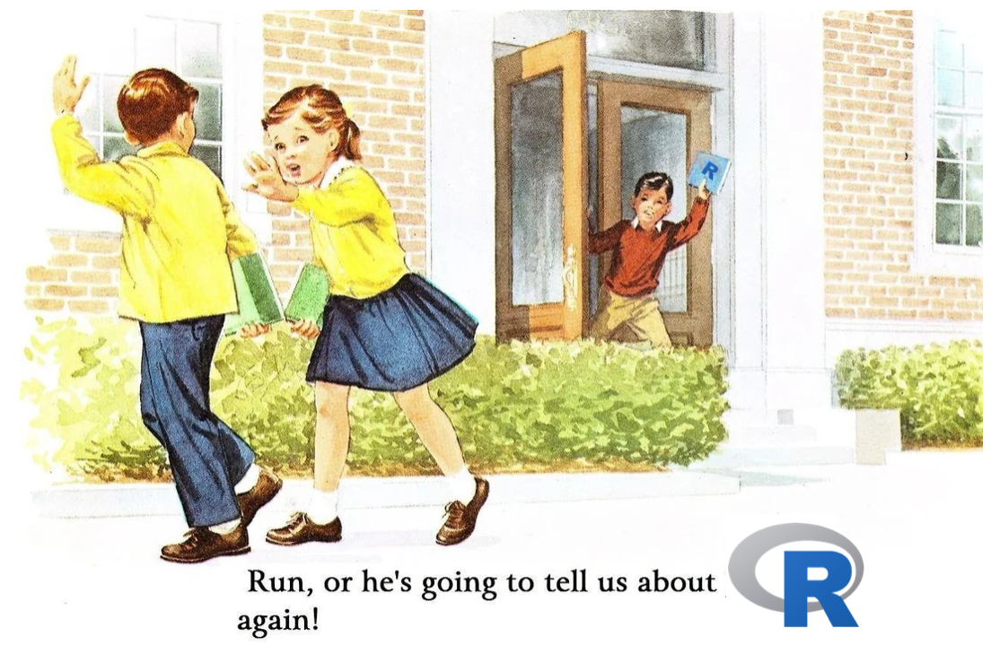
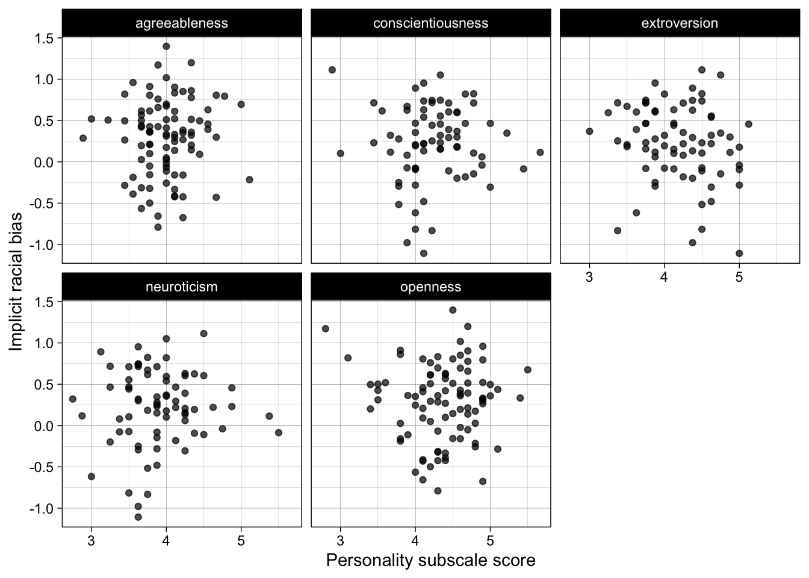

library(dplyr) # for %>%, rename(), filter(), mutate(), select(), group_by(), summarize()
library(tidyr) # for pivot_longer()
library(readr) # for read_csv(), write_csv()
library(ggplot2) # for ggplot()
library(report) # for report_text()3 Reproducible reports
This chapter introduces Quarto (.qmd) files, which let you write text and R code in the same document and turn them into a report, such as a .html file. Every chapter of this book is a Quarto file, and you will use them for all the exercises.
Writing your data processing and analysis this way makes it reproducible: each time the report is rendered, all the code runs again from the start, so the numbers, tables, and plots in the report always match the data and code that produced them. The chapter covers code chunks, rendering, markdown formatting, and math, and then gives a quick preview of what a full workflow looks like, from loading raw data to tables, plots, and analyses. You don’t need to understand that code yet: the later chapters teach it step by step. It builds on the Fundamentals chapter, especially on loading packages.
3.1 Literate programming
Literate programming is the idea that code and text should be written in the same document to produce a narrative with reproducible results. It is therefore very suited to writing scientific reports and manuscripts.
3.1.1 In-line code
Code can be written ‘in-line’ in the text as follows: the code “`r 1+1`” is run and produces the output “2”. In your local .qmd document, you can hover over the in-line code and press cmd-enter or cmd-return (Mac) / ctrl-enter or ctrl-return (Windows) to run the code.
3.1.2 Code chunks
For any code that isn’t extremely short, you should write it in code chunks.
These are written as follows: three backticks followed by “{r}” specifies that it is a chunk of R code, then the code, then three more backticks to end the chunk. Note that backticks are not apostrophes! (` vs ’).
You can also insert a code chunk with Ctrl + Alt + I (Windows) or Cmd + Alt + I (Mac).
Output appears below chunks. You can run all code in a chunk by clicking the right-arrow button to the right of the chunk:
You can also run all previous chunks in a document not including the current chunk by clicking the downward arrow button to the right of the chunk:
For example, run this code chunk in the local version of .qmd file. Note that the buttons are only visible in RStudio, not the ebook version of this file.
2+2[1] 43.2 Rendering and reproducibility
Quarto (.qmd) and RMarkdown (.Rmd) files can produce .html files that can be viewed in any web browser. This has two key functions:
- It allows you to make more attractive outputs with tables, plots, and results.
- It can greatly increase reproducibility. Each time you ‘render’ a .html file from a .qmd/.Rmd, the code is run in a new R session in the background. The .html file is only created if all the code runs. This is extremely useful for ensuring that your code does indeed run, that you have all necessary packages loaded, etc. Note however that it does not ensure that your code is error free, that there are not unnecessary packages loaded, etc.
3.3 Markdown formatting and levels of heading
Quarto (.qmd) and RMarkdown files (.Rmd) allow you to use markdown formatting. This is a very simple way to do basic formatting, such as headings, emphasis, bullet points and lists.
Markdown formatting can be used as follows.
Don’t forget the space after the #, or spaces between lines to separate sections of different types!
# Level 1 heading
## Level 2 heading
### Level 3 heading
Normal text.
*italic text*
**bold text**
- bullet points
- bullet points
1. numbered list
2. numbered list
Display an image in visual editor/on rendering:
Each of the above are rendered as follows in the .html file once rendered:
3.4 Level 1 heading
3.4.1 Level 2 heading
3.4.1.1 Level 3 heading
Normal text.
italic text
bold text
- bullet points
- bullet points
- numbered list
- numbered list
Display an image in visual editor/on rendering:

3.5 Table of contents and outline
Levels of heading are extremely useful for structuring your report.
- They automatically appear as headings in the “Outline” section in RStudio, therefore allowing you to navigate your document easily. When you have a .qmd or .Rmd file open in RStudio, click the ‘Outline’ button to the top-right of the source file window, where this text appears, to see all the headings in your file. Click any of them to go to that heading in the document.
- When the file is rendered (.qmd) or knitted (.Rmd) to a .html file, the levels of heading will appear as clickable links in the table of contents (assuming that your YAML header at the top of your file has
toc: true; this book sets this for every chapter).
3.6 Math typesetting via LaTeX
LaTeX is a typesetting system designed for creating professional-looking documents, especially those containing mathematics, tables, and references. In psychology research, you are likely to encounter LaTeX most often indirectly—because Quarto (which we use throughout this book) relies on LaTeX in the background when generating PDF outputs.
You do not need to learn LaTeX in detail to work reproducibly with R code in Quarto documents, but it is useful to understand what it does and if you want to include math in your Quarto documents: it ensures that your documents are formatted consistently, citations and references are automatically handled, and statistical results or equations are rendered cleanly. In practice, this means you can focus on your analyses and writing in R and Quarto, while LaTeX quietly manages the professional typesetting for you.
You can include math in-line with LaTeX code placed between dollar signs: e.g., “$\eta_{p}^{2}$ = 0.03” produces “\(\eta_{p}^{2}\) = 0.03”.
You can also write longer chunks of LaTeX, for example to specify that the mean (\(\bar{x}\)) is the sum of all elements of the vector \(x\) divided by number of elements in the vector (\(n\)).
This code:
$$
\bar{x} = \frac{1}{n} \sum_{i=1}^n x_i.
$$Produces this math:
\[ \bar{x} = \frac{1}{n} \sum_{i=1}^n x_i. \]
Writing math via LaTeX often sounds like a very advanced skill when you’re introduced to it but it can be very useful, especially for Monte Carlo simulation studies, which I teach in a separate course.
3.7 Reading, processing, and writing data
Raw data can be read in from .csv, .xlsx, SPSS .sav, and many other types of files. Raw data can be processed and tidied into analyzable data and saved to disk.
We will cover these functions in later chapters. For the moment, the point to appreciate is that clear, reproducible workflows are easy to write in R+tidyverse.
Read the comments and code below to see if you can understand the general flow of what is being done, even without knowing these functions yet.
# load raw data
dat_raw <- readr::read_csv("../data/raw/data_raw_bfi.csv")
# process data
dat_processed <- dat_raw %>%
# rename variable to make it clearer
dplyr::rename(race_iat = IAT_score) %>%
# exclude participants with missing data or who did not meet performance criteria
dplyr::filter(complete_individual_differences_data == TRUE & exclude_iat == FALSE) %>%
# calculate mean scores for the BFI personality subscales
dplyr::rowwise() %>%
dplyr::mutate(openness = mean(c_across(starts_with("bfi_o"))),
conscientiousness = mean(c_across(starts_with("bfi_c"))),
extroversion = mean(c_across(starts_with("bfi_e"))),
agreeableness = mean(c_across(starts_with("bfi_a"))),
neuroticism = mean(c_across(starts_with("bfi_n")))) %>%
dplyr::ungroup() %>%
# retain only the columns needed
dplyr::select(race_iat, openness, conscientiousness, extroversion, agreeableness, neuroticism)
# create a directory to save processed data to
dir.create("../data/processed")
# save data
readr::write_csv(dat_processed, "../data/processed/data_processed_bfi_race_iat.csv")
# reshape to long format for tables and plots
dat_processed_long <- dat_processed %>%
tidyr::pivot_longer(cols = c(openness, conscientiousness, extroversion, agreeableness, neuroticism),
names_to = "subscale",
values_to = "score")3.8 Tables
Summary statistics such as sample sizes, means and Standard Deviations can be calculated, rounded, and presented in tables.
Again, we will cover these functions in later chapters. For the moment, simply notice that this is quite simple to do. As before, read the comments and code below to see if you can understand the general flow of what is being done, even without knowing these functions yet.
# table
dat_processed_long %>%
# summarize mean and SD by subscale
dplyr::group_by(subscale) %>%
dplyr::summarize(n = dplyr::n(),
m = mean(score, na.rm = TRUE),
sd = sd(score, na.rm = TRUE)) %>%
# round estimates
dplyr::mutate(m = janitor::round_half_up(m, digits = 2),
sd = janitor::round_half_up(sd, digits = 2))| subscale | n | m | sd |
|---|---|---|---|
| agreeableness | 167 | 4.00 | 0.38 |
| conscientiousness | 167 | 4.24 | 0.48 |
| extroversion | 167 | 4.18 | 0.49 |
| neuroticism | 167 | 3.91 | 0.50 |
| openness | 167 | 4.37 | 0.48 |
3.9 Plots
Plots can be made in {ggplot2}, e.g., scatter plots of the association between personality subscales and implicit racial bias.
As before, read the comments and code below to see if you can understand the general flow of what is being done, even without knowing these functions yet.
# plot
ggplot(dat_processed_long, aes(score, race_iat)) +
geom_point(alpha = 0.7) +
facet_wrap(~ subscale) +
theme_linedraw() +
ylab("Implicit racial bias") +
xlab("Personality subscale score")
3.10 Analyses
Analyses can be run, and even their results extracted and interpreted, with the help of R packages such as {report} and {parameters} from the easystats cluster of packages.
# fit correlation test
res <- cor.test(formula = ~ race_iat + extroversion,
data = dat_processed,
use = "pairwise.complete.obs")
# create standard report of results
report::report_text(res)Effect sizes were labelled following Funder's (2019) recommendations.
The Pearson's product-moment correlation between race_iat and extroversion is
negative, statistically not significant, and small (r = -0.18, 95% CI [-0.39,
0.05], t(73) = -1.52, p = 0.132)3.11 Key functions
The main tools covered in this chapter:
| Function or tool | Package | What it does |
|---|---|---|
In-line code: `r ` |
Quarto | Runs a short piece of R code inside the text and shows its result there. |
Code chunk: ```{r} |
Quarto | A block of R code whose output appears below it. |
| Ctrl/Cmd + Alt + I | RStudio | Inserts a new code chunk. |
| Run current chunk / run all previous chunks buttons | RStudio | Run the code in this chunk, or in all chunks above it. |
| Render button | Quarto | Runs all the code in a fresh R session and creates the .html report. |
#| eval: false |
Quarto | Chunk option: shows the code but does not run it. |
#| include: false |
Quarto | Chunk option: runs the code but hides both code and output in the report. |
#, ##, ### |
Markdown | Levels of heading, used for the Outline and the table of contents. |
*italic*, **bold**, - |
Markdown | Italic and bold text, and bullet points. |
$...$ and $$...$$ |
LaTeX | In-line and displayed math. |
YAML header: title:, author:, date:, toc: |
Quarto | Settings for the whole document, at the top of the file between two --- lines. |
3.12 Exercises
Check your learning with the following questions. Exercises that involve running code should be done in your local copy of this chapter’s .qmd file (see the Introduction for how to get a copy).
3.12.1 Check your understanding
Answer the questions, then click the button at the bottom to check your answers.
- Which chunk option runs a chunk’s code but hides both the code and its output in the rendered .html file?
- When you render a .qmd file, its code runs in a new R session, so objects in your current Environment are not available to it.
- If a .qmd file renders successfully, its code is free of errors.
- Which line of markdown creates a level 2 heading?
- What do you put around LaTeX math to show it in-line in the text?
NoteClick to show explanations
#| include: falseruns the code but leaves it and its output out of the report.#| eval: falsedoes the opposite: it shows the code but does not run it.- True. This is what makes rendering useful for reproducibility: the report can only use what the file itself creates and loads.
- False. Rendering shows that the code runs, not that it does the right thing. Code can run and still contain mistakes, or load packages it doesn’t need.
## Heading. The number of#symbols sets the level of the heading, and the space after them is required:#Headingis not a heading.- Single dollar signs, e.g.,
$\bar{x}$. Double dollar signs ($$) put the math on its own line.
What is literate programming, and why is it useful for writing scientific reports?
NoteClick to show answer
Literate programming means writing the code and the text that explains it in the same document. The results in the text, tables, and plots are produced directly by the code, so they can’t drift out of sync with the analysis or be copied across incorrectly. Anyone with the file and the data can rerun it and check how each result was produced.
Your code runs fine when you run the chunks one by one in RStudio, but the file fails to render. What are some likely reasons?
NoteClick to show answer
Rendering runs all the code from top to bottom in a fresh R session. Common reasons for a failed render are: the code relies on an object you created in the console or in a chunk you later deleted; a package was loaded in the console but not with library() in the file; chunks only work when run in a different order from the one they appear in the file; or the file contains install.packages() calls that should not run.
Why shouldn’t install.packages() calls run every time a file is rendered? How can you keep them in the file without them running?
NoteClick to show answer
Packages only need to be installed once per computer, so reinstalling them on every render is slow and unnecessary, and it can make the render fail. Add #| eval: false at the top of the chunk, so the code is shown but not run.
When would you use in-line code rather than a code chunk?
NoteClick to show answer
In-line code is for short results that you want to report in a sentence, such as the sample size or a mean, e.g., by writing nrow(dat) as in-line R code in the sentence “We recruited … participants”. The number then updates automatically if the data change. Anything longer, such as processing data, making tables or plots, or fitting models, belongs in code chunks.
3.12.2 Practice
In your local copy of this chapter’s .qmd file, complete the tasks below. No solutions are provided for these tasks, to reduce the temptation to peek or copy-paste. Use the hints if you get stuck.
3.12.2.1 Insert a new chunk and write code to install packages
- Insert a new code chunk at the top of this file.
- Use the
install.packages()function to install the packages {tidyverse}, {janitor}, and {report}. Remember to exclude the “{}” and use quotation marks around the package names. - Run this chunk to install these packages.
- Try to render the file. It should fail.
install.packages()calls will cause the render to fail, so we have to set the code in that chunk to not run. You could comment out this code, but the better option is to use chunk settings: include#| eval: falseat the top of the chunk. Or, click the settings/gear icon on the top-right of the code chunk and click “Output>Show nothing (don’t run code)”, which will insert in the chunk both#| eval: false(“don’t run the code”) and#| include: false(“don’t show the code in the .html”).
NoteClick to show hint
You can install several packages with one call by giving install.packages() a vector of names, made with c(). Chunk options start with #| and go on the first lines of the chunk, before any code.
3.12.2.2 Render the report
Click ‘render’ to create a reproducible report as a .html from this .qmd file.
NoteClick to show hint
The ‘Render’ button is in the toolbar above the file in RStudio. If the render fails, read the error message in the ‘Background Jobs’ or ‘Render’ pane: it tells you which chunk failed.
3.12.2.4 Insert a new chunk
Insert a new chunk below this heading. Either type it yourself using backticks or use the keyboard shortcut: Ctrl + Alt + I (Windows) or Cmd + Alt + I (Mac). Enter some simple working code inside the chunk:
- Assign the variable
xto have the value5 - Assign the variable
yto have the valuexminus3. - Print the value of
yas output.
Run the code in the chunk by clicking the green right-arrow:
Need a refresher on variable assignment? Go back to the chapter on Fundamentals.
NoteClick to show hint
Use <- for assignment. You can use x on the right-hand side when creating y, because it already exists. Typing an object’s name on its own line prints it.
3.12.2.5 Make the plot more colorful
Change the ‘aesthetics’ call from aes(score, race_iat) to aes(score, race_iat, color = subscale). Run all previous chunks to reload and reprocess the data using this button: Then, run the plot chunk again using this one to view your more colorful plot:
NoteClick to show hint
The plot is made in the chunk in the Plots section. The data it uses (‘dat_processed_long’) is created in an earlier chunk, so if you get an error saying the object can’t be found, run the previous chunks first.